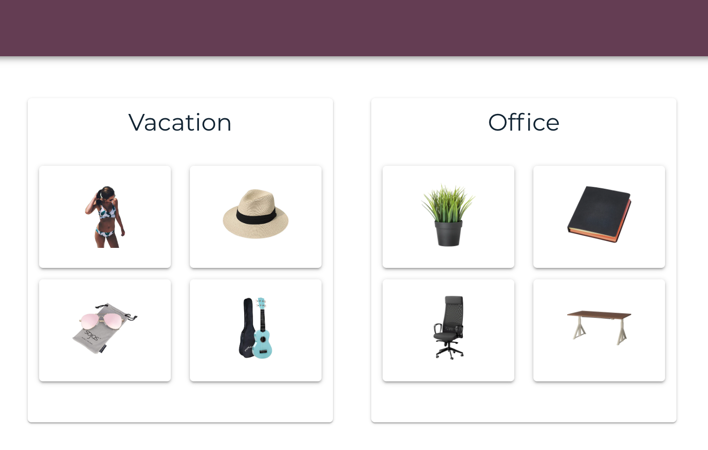

About Me
An organized and motivated full stack web developer who will always go the extra mile to get the work done. After taking a break from web development to focus on my family, I am eager to get back in the field, continue to learn, sharpen my skills, and contribute to the technology world. With a Master's degree in Media Informatics and refreshed coding skills from the lighthouse labs web development bootcamp, I am now fully charged and ready for more challenges. I am passionate about learning new things, family, handcrafting, cooking, skiing and dogs.
Employment
October 2015 to December 2016 - Richmond, BC
- Maintained company
website and implemented new features.
- Created navigation that guided users through the website.
- Made the website mobile friendly.
- Made the "Recent cases" section where clients could view the 10 most recent successful cases.
- Improved the "Contact us" section by implementing an interactive form where clients could send inquiries directly on the website. (There were many clients outside of Canada who preferred online messaging over phone calls)
- Regularly communicated with management team and clients for feedback on the website.
- Organized and updated the website content.
- Tech stack:
HTML, PHP, JavaScript, jQuery, jQuery Mobile, CSS, Photoshop.
PURCHASING AGENT
Golden Route International Trading Ltd.
April 2014 to September 2015 - Port Coquitlam, BC/ Zhengzhou, China
- Sourced several Canadian made cosmetic and healthy food products, including brands such as "Scentuals", "Lotus Fine Foods", "LB Maple Treat", etc.
- Negotiated with the suppliers to secure the lowest prices.
- Assisted in preparing export documents.
MASTERS PROJECT
Fraunhofer FIT
May 2012 to May 2013 - Sankt Augustin, Germany
- Participated in the project InfoStrom. Worked closedly with Sankt Augustin Fire Department.
- Designed and developed a collaborative checklist website for mobile devices.
- Conducted iterative evaluations with users from the fire department for feedbacks.
- Tech Stack: JavaScript, JQuery, JQueryMobile, PHP, MySQL
FRONTEND WEB DEVELOPER
China Electronics Data Service Ltd.
January 2007 to May 2009 - Beijing, China
- Created frameworks and prototypes for the Healthcare Information Technology Project.
- Tech stack: HTML, CSS, JavaScript, Photoshop.
Projects
|
|
Event Creator
- A full stack web application for listing family activities for the weekends.
- Users can view, create, edit, and delete events.
- Built with PHP, MySQL, phpMyAdmin, Apache, Bootstrap, CSS.
|
|

|
Latercart
- A chrome extension plus a website which allows the user to create aggregate wishlists while shopping on different websites.
- Users can share their wishlists with other users to make collaborative wishlists.
- Built with React, React Router, jQuery, JavaScript, Ruby on Rails, PostgreSQL, Material-UI, CSS.
|
|
|
Jungle
- A simple Amazon clone e-commerce application.
- Implemented new features such as "user login", "user registration", "order detail", etc.
- Used Rspec to test and revise models and features.
- Built with Ruby on rails, PostgreSQL, Rspec.
|

|
Chatty
- A single-page Slack clone application.
- Multiple users can communicate with each other in real-time.
- Built with Node, Express, WebSocket, JavaScript, React, JSX, Babel, Webpack, CSS, SASS.
|

|
The Waterhole
- A full stack Pinterest-style website for users to save and share learning resources.
- Supported various user interactions such as liking and unliking a post, commenting, and rating.
- Built with Express, jQuery, Ajax, Knex, PostgreSQL, Javascript, Bootstrap, CSS, SASS.
|

|
Tweeter
- A single-page Twitter clone application.
- Built with HTML, javascript, jQuery, Ajax, Node, Express, MongoDB, CSS.
|
Education
DIPLOMA - Web Development
Lighthouse Labs
March 2019 to May 2019 - Vancouver, BC
- Best programming practices from good database modeling to abstraction and well-encapsulated code & modular design.
- Intensively practicing popular languages and frameworks like JavaScript, React, Ruby on Rails.
MASTER OF SCIENCE - Media Informatics
RWTH Aachen University
October 2009 to May 2013 - Aachen, Germany
- Computer science and mathematical fundamentals
- Multimedia Technology
- Media science and business aspects
BACHELOR OF ENGINEERING - Digital Technology
Beijing Technology and Business University
September 2005 to July 2009 - Beijing, China
- Software engineering fundamentals
- Image/video/audio processing